에너지관리산업기사 (2015-03-08 기출문제)
1과목: 열역학 및 연소관리
1. 교축과정(throttling process)을 거친 기체는 다음 중 어느 양이 일정하게 유지되는가?
- 압력
- 엔탈피
- 체적
- 엔트로피
(정답률: 82%)

2. 축소 노즐에서 가역 단열팽창할 때 일어나는 현상은?
- 압력 감소
- 엔트로피 감소
- 온도 증가
- 엔탈피 증가
(정답률: 60%)
3. 상태량이 아닌 것은?
- U(내부 에너지)
- H(엔탈피)
- Q(열)
- G(깁스 자유에너지)
(정답률: 75%)
4. 압축비에 대한 설명으로 틀린 것은?
- 오토사이클의 효율은 압축비의 함수이다.
- 압축비가 감소하면 일반으로 오토사이클의 효율은 증가한다.
- 디젤사이클의 효율은 압축비와 차단비(cut-off ratio)의 함수이다.
- 동일한 압축비에서는 디젤 사이클의 효율이 오토사이클의 효율보다 낮다.
(정답률: 65%)
5. 이상기체의 온도가 T1에서 T2로 변하고 압력이 P1에서 P2로 변하였다. 이 때 비체적은 V1에서 V2로 변하였다고 하면, 엔트로피의 변화는 어떻게 표시되는가? (단, Cu는 정적비열, Cp는 정압비열이며, R은 기체상수다.)
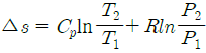
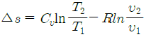
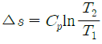
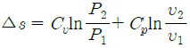
(정답률: 64%)
6. 탱크 내에 900kPa의 공기 20kg이 충전되고 있다. 공기 1kg을 뺄 때 탱크 내 공기온도가 일정하다면 탱크 내 공기압력은?
- 655kPa
- 755kPa
- 855kPa
- 900kPa
(정답률: 72%)
7. 기체 동력 사이클과 관계가 없는 것은?
- 증기원동소
- 가스터빈
- 디젤기관
- 불꽃점화 자동차기관
(정답률: 66%)
8. 그림과 같은 관로에 펌프를 설치하여 계속 가동시키면 관로를 움직이는 유체의 온도는 어떻게 변하는가? (단, 관로에 외부로부터 열 출입은 없는 것으로 가정한다.)
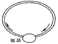
- 온도가 일단 낮아진 후 원래의 온도로 된다.
- 상승한다.
- 하강한다.
- 변화가 없다.
(정답률: 88%)
9. 카르노 열기관의 효율(η)을 열역학적 온도(θ)로 표시한 것은? (단, θ1＞θ2)
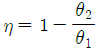
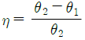
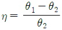
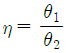
(정답률: 73%)
10. 표준대기압 상태에서 진공도 90%에 해당하는 압력은?
- 0.92988 ata
- 0.10332 ata
- 684 mmHg
- 1.013 bar
(정답률: 65%)
11. 섭씨와 화씨의 온도 눈금이 같은 경우는 몇 도 인가?
- 20°C
- 0°C
- -20°C
- -40°C
(정답률: 72%)
12. 압력 400kPa, 체적 2m3인 공기가 가역 단열 팽창하여 100kPa로 되었다. 이 때 외부에 대한 절대 일(absolute work)은 얼마인가? (단, 공기의 비열비는 1.4이다.)
- 262kJ
- 600kJ
- 655kJ
- 832kJ
(정답률: 51%)
13. 댐퍼에서 현상에 따른 분류가 아닌 것은?
- 터보형 댐퍼
- 버터플라이 댐퍼
- 시로코형 댐퍼
- 스폴리트 댐퍼
(정답률: 69%)
14. 어떤 이상기체를 가역단열과정으로 압축하여 압력이 P1에서 P2로 변하였다. 압축 후의 온도를 구하는 식은? (단, 1은 초기상태, 2는 최종상태, k는 비율비를 나타낸다.)
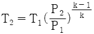
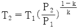
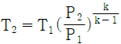
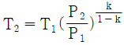
(정답률: 69%)
15. 단열처리된 밀폐용기 내에 물이 0.09m3 채워져 있을 때 800°C의 철 3kg을 넣어 평형온도가 20°C 로 되었다면 이 때 물의 온도 상승은 약 얼마인가? (단, 철의 비열은 0.46kJ/kgㆍ°C 이며, 물의 비열은 4.2kJ/kgㆍ°C 이다.)
- 2.85℃
- 19.61℃
- 27.65℃
- 47.36℃
(정답률: 30%)
16. 어떠한 계의 초기상태를 i , 최종 상태를 f, 중간경로를 p라 할 때 이 계에 의해 행해진 일은?
- i와 f에만 관계가 있다.
- i와 p에만 관계가 있다.
- f와 p에만 관계가 있다.
- I와 f와 p 모두와 관계가 있다.
(정답률: 89%)
17. 중유 5kg을 완전 연소시켰을 때 총 저위발열량은? (단, 중유의 고위발열량은 41860kJ/kg이고, 중유 1kg 속에는 수소 0.2kg, 수분 0.1kg이 함유되어 있다.)
- 185.4 MJ
- 172.1 MJ
- 165.2 MJ
- 161.3 MJ
(정답률: 37%)
18. 이상기체 0.5kg을 압력이 일정한 과정으로 50℃에서 150℃로 가열할 때 필요한 열량은? (단, 이 기체의 정적비열은 3kJ/kgㆍK, 정압비열은 5kJ/kgㆍ K 이다)
- 150kJ
- 250kJ
- 400kJ
- 550kJ
(정답률: 67%)
19. 황의 연소 반응식이 S + O2 →SO2 일 때, 이론 공기량은?
- 1.88Nm3/kg
- 2.38Nm3/kg
- 2.88Nm3/kg
- 3.33Nm3/kg
(정답률: 60%)
20. 공기보다 비중이 커서 누설이 되면 낮은 곳에 고여 인화폭발의 원인이 되는 가스는?
- 수소
- 메탄
- 일산화탄소
- 프로판
(정답률: 85%)
2과목: 계측 및 에너지진단
21. 방사온도계에 대한 설명으로 틀린 것은?
- 방사율에 의한 보정량이 적다.
- 계기에 따라 거리계수가 정해지므로 측정거리에 제한이 있다.
- 측온체와의 사이에 있는 수중기, CO2등의 영향을 받는다.
- 물체표면에서 방출하는 방사열을 이용하여 온도를 측정한다.
(정답률: 65%)
22. 열정산 시 연료의 입열량에 가장 큰 영향을 미치는 물질은?
- 물과 질소
- 탄소와 수소
- 수소와 산소
- 질소와 수소
(정답률: 71%)
23. 배기가스 분석방법 중 현저히 낮은 열전도율을 이용한 가스 분석계는?
- 미연가스계
- 적외선식 가스분석계
- 전기식 CO2계
- 가스 크로마토그래피
(정답률: 58%)
24. 배관시공 시 적당한 온도계의 설치 높이는 약 몇 m 인가?
- 4.5
- 3.5
- 2.5
- 1.5
(정답률: 86%)
25. 계측기의 구비조건으로 틀린 것은?
- 취급과 보수가 용이해야 한다.
- 견고하고 신뢰성이 높아야 한다.
- 설치되는 장소의 주위 조건에 대하여 내구성이 있어야 한다.
- 구조가 복잡하고, 전문가가 아니면 취급할 수 없어야 한다.
(정답률: 91%)
26. 보일러 수위 검출 및 조절을 위해 사용되는 장치 중 코프식이 적용되는 방식은?
- 전극식
- 차압식
- 열팽창식
- 부자(Float)식
(정답률: 50%)
27. 계측기의 특성이 시간적 변화가 작은 정도를 나타내는 것은?
- 안정성
- 신뢰도
- 내구성
- 내산성
(정답률: 71%)
28. 자동제어장치에서 입력을 정현파상의 여러 가지 주파수로 진동시켜서 계나 요소의 특성을 알아내는 방법은?
- 주파수 응답
- 시정수(time constant)
- 비례동작
- 프로그램제어
(정답률: 87%)
29. 비열 0.3kcal/m3 ℃인 배기가스의 유량 및 온도가 각각 2000 m3/h, 210℃이고 외기온도가 -10℃라고 할 때, 이와 같은 배기가스로 인한 손실열량은?
- 125000kcal/h
- 132000kcal/h
- 140000kcal/h
- 147000kcal/h
(정답률: 77%)
30. 차압식 유량계로 유량을 측정 시 차압이 2500mmH2O 일 때 유량이 300m3/h라면, 차압이 900mmH2O 일 때의 유량은?
- 108 m3/h
- 150m3/h
- 180m3/h
- 200m3/h
(정답률: 49%)
31. 자동제어장치에서 조절계의 입력신호 전송방법에 따른 분류로 가장 거리가 먼 것은?
- 공기식
- 유압식
- 전기식
- 수압식
(정답률: 70%)
32. 보일러의 용량 표시방법과 관계가 없는 것은?
- 상당증발량
- 전열면적
- 보일러마력
- 연료소비량
(정답률: 58%)
33. 보일러 열정산 시 보일러 최종 출구에서 측정하는 값은?
- 급수온도
- 예열공기온도
- 과열증기온도
- 배기가스온도
(정답률: 88%)
34. 열팽창계수가 서로 다른 박판을 사용하여 온도 변화에 따라 휘어지는 정도를 이용한 온도계는?
- 제겔콘 온도계
- 바이메탈 온도계
- 알코올 온도계
- 수은 온도계
(정답률: 83%)
35. 출력이 일정한 값에 도달한 이후의 제어계의 특성을 무엇이라고 하는가?
- 과도특성
- 스텝특성
- 정상특성
- 주파수응답
(정답률: 84%)
36. 보일러의 능력에 대한 표기인 보일러 마력이란 어떤 값인가? (단, 실제증발량 및 상당증발량 단위는 kgf/h이다.)
- 실제증발량/15.65
- 상당증발량/15.65
- 실제증발량/539
- 상당증발량/539
(정답률: 70%)
37. 모세관의 상부에 보조 구부를 설치하고 사용온도에 따라 수은의 양을 조절하여 미세한 온도차를 측정할 수 있는 온도계는?
- 액체팽창식 온도계
- 열전대 온도계
- 가스압력 온도계
- 배그만 온도계
(정답률: 76%)
38. 안지름 10cm인 관에 물이 흐를 때 피토관으로 측정한 유속이 3m/s 이면 유량은?
- 13.5kg/s
- 23.5kg/s
- 33.5kg/s
- 53.5kg/s
(정답률: 59%)
39. 헴펠 분석법에서 가스가 흡수되는 순서로 옳은 것은?
- CO2 → O2 → CO → CmHn → H2 → CH4
- CO2 → CmHn → O2 → CO → H2 → CH4
- CO2 → CO → O2 → H2 → CmHn → CH4
- CO2 → O2 → CO → H2 → CH4 → CmHn
(정답률: 69%)
40. 다음 중 탄성식 압력계로써 가장 높은 압력 측정에 사용되는 것은?
- 다이어프램식
- 벨로스식
- 부르동관식
- 링밸런스식
(정답률: 77%)
3과목: 열설비구조 및 시공
41. 액체연료 연소장치 중 고압기류식 버너의 선단부에 혼합실을 설치하고 공기, 기름 등을 혼합시킨 후 노즐에서 분사하여 무화하는 방식은?
- 내부 혼합식
- 외부 혼합식
- 무화 혼합식
- 내, 외부 혼합식
(정답률: 77%)
42. 두께 50mm인 보온재로 시공한 기기의 방열량이 160kcal/h 일때, 보온재의 열전도율은? (단, 보온판의 내ㆍ외부 온도는 각각 300℃, 100℃이고, 단면적은 1m2 이다.)
- 0.02kcal/mㆍhㆍ℃
- 0.04kcal/mㆍhㆍ℃
- 0.⑤kcal/mㆍhㆍ℃
- 0.08kcal/mㆍhㆍ℃
(정답률: 67%)
43. 청동 또는 스테인리스강을 파형으로 주름을 잡아서 아코디언과 같이 만들고, 이 주름의 신축으로 온도 변화에 따른 배관의 길이 방향 신축을 흡수하는 이음은?
- 루프형
- 스위블형
- 슬리브형
- 벨로우즈형
(정답률: 68%)
44. 열교환기의 열전달 성능을 직접적으로 향상시키는 방법으로 가장 거리가 먼 것은?
- 유체의 유속을 빠르게 한다.
- 유체의 흐르는 방향을 향류로 한다.
- 열교환기의 입출구 높이 차를 크게 한다.
- 열전도율이 높은 재료를 사용한다.
(정답률: 67%)
45. 크롬이나 크롬-마그네시아 벽돌이 고온에서 산화철을 흡수하여 표면이 부풀어 오르거나 떨어져 나가는 현상을 의미하는 것은?
- 열화
- 스폴링(spalling)
- 슬래킹(slaking)
- 버스팅(bursting)
(정답률: 67%)
46. 수관식 보일러의 특징이 아닌 것은?
- 부하변동에 따른 압력변화가 적다.
- 전열면적이 크나 보유수량이 적어서 증기발생시간이 단축된다.
- 증발량이 많아서 수위변동이 심하므로 급수조절에 유의해야 한다.
- 고압, 대용량에 적합하다.
(정답률: 59%)
47. 증기보일러의 부속장치에 해당되지 않는 것은?
- 급수장치
- 송기장치
- 통풍장치
- 팽창장치
(정답률: 73%)
48. 관류 보일러 설계에서 순환비란?
- 순환수량과 포화수량의 비
- 포화수량과 발생증기량의 비
- 순환수량과 발생증기량의 비
- 순환수량과 포화증기량의 비
(정답률: 70%)
49. 검사를 받아야 하는 검사대상기기의 종류에 포함되지 않는 것은?
- 강철제 보일러
- 태양열 집열기
- 주철제 보일러
- 2종 압력용기
(정답률: 79%)
50. 유리섬유(glass wool)보온재의 최고 안전사용 온도는?
- 200℃
- 300℃
- 400℃
- 500℃
(정답률: 77%)
51. 보일러 수에 포함된 성분 중 포밍(foaming)발생 원인과 가장 거리가 먼 것은?
- 나트륨(Na)
- 칼륨(K)
- 칼슘(Ca)
- 산소(O2)
(정답률: 76%)
52. 검사대상기기의 설치자가 그 검사대상기기의 사용을 중지한 경우에는 중지한 날부터 며칠 이내에 사용중지 신고서를 에너지관리공단 이사장에게 제출하여야 하는가?
- 15일
- 20일
- 25일
- 30일
(정답률: 78%)
53. 특수보일러에 해당하지 않는 것은?
- 벤슨 보일러
- 다우섬 보일러
- 레플러 보일러
- 슈미트-하트만 보일러
(정답률: 74%)
54. 주철관의 소켓 접합 시 얀(yarn)을 삽입하는 주된 이유는?
- 누수 방지
- 외압의 완화
- 납의 이탈 방지
- 납의 강도 증가
(정답률: 82%)
55. 대표적인 연속시 가마로 조업이 쉽고 인건비, 유지비가 적게 들며, 열효율이 좋고 열 손실이 적은 가마는?
- 등요(Up hill kiln)
- 셔틀요(Shuttle kiln)
- 터널요(Tunnel kiln)
- 승영식요(Up draft kiln)
(정답률: 79%)
56. 에너지이용 합리화법 시행규칙에서 검사의 종류 중 개조검사 대상이 아닌 것은?
- 보일러의 설치장소를 변경하는 경우
- 연료 또는 연소방법을 변경하는 경우
- 증기보일러를 온수보일러로 개조 하는 경우
- 보일러섹션의 증감에 의하여 용량을 변경하는 경우
(정답률: 74%)
57. 규석질 벽돌의 특징에 대한 설명이 틀린 것은?
- 내화도가 높으며 내마모성이 좋다.
- 열전도율이 샤모트질 벽돌보다 작다.
- 저온에서 스폴링이 발생되기 쉽다.
- 용융점 부근까지 하중에 견딘다.
(정답률: 66%)
58. 배관지지 장치 중 열팽창에 의한 이동을 구속하기 위한 레스트레인트(restraint)에 해당되지 않는 것은?
- 앵커(anchor)
- 스토퍼(stopper)
- 가이드(guide)
- 브레이스(brace)
(정답률: 72%)
59. 에너지 이용 합리화법 시행규칙에서 검사의 종류 중 계속사용검사에 포함되는 것은?
- 설치검사
- 개조검사
- 안전검사
- 재사용검사
(정답률: 76%)
60. 보일러 절탄기(economizer)에 대한 설명으로 옳은 것은?
- 보일러의 연소량을 일정하게 하고 과잉열량을 물에 저장하여 과부하시 증기 방출하여 증기 부족을 보충시키는 장치이다.
- 연소가스의 여열을 이용하여 보일러 급수를 예열하는 장치이다.
- 연도로 흐르는 연소가스의 여열을 이용하여 연소실에 공급되는 연소공기를 예열시키는 장치이다.
- 보일러에서 발생한 습포화 증기를 압력은 일정하게 유지하면서 온도만 높여 과열증기로 바꾸어 주는 정치이다.
(정답률: 78%)
4과목: 열설비취급 및 안전관리
61. 보일러 내면의 상당히 넓은 범위에 걸쳐 거의 똑같이 생기는 상태의 부식으로 가장 적합한 것은?
- 국부부식
- 응력부식
- 틈부식
- 전면부식
(정답률: 82%)
62. 보일러수의 이상증발 예방대책이 아닌 것은?
- 송기에 있어서 증기밸브를 빠르게 연다.
- 보일러수의 블로우 다운을 적절히 하여 보일러수의 농축을 막는다.
- 보일러의 수위를 너무 높이지 않고 표준수위를 유지하도록 제어한다.
- 보일러수의 유지분이나 불순물을 제거하고 청관제를 넣어 보일러수 처리를 한다.
(정답률: 83%)
63. 보일러 사고에 관한 내용으로 틀린 것은?
- 압궤는 고온의 화영을 받는 전열면이 과열이 지나쳐서 견디지 못하고 안쪽으로 눌리어 오목하게 들어간 현상이다.
- 팽출은 전열면의 과열이 지나쳐 내압력 작용에 견디지 못하고 밖으로 부풀어 나오는 현상이다.
- 라미네이션은 기포 및 가스구멍이 혼재된 강괴를 압연할 경우 강판 및 강관이 기포에 의해 내부에서 두장으로 분리되는 현상이다.
- 블리스터는 라미네이션 상태에서 가열이 지나쳐 내부로 오목하게 들어간 현상이다.
(정답률: 75%)
64. 보일러 시공 작업장의 환경 조건에 관한 설명으로 틀린 것은?
- 작업장의 조명은 작업면과 바닥 등에 너무 짙은 그림자가 생기지 않아야 한다.
- 보일러실은 통풍이 양호하고 배수가 잘 되어야 한다.
- 소음이 심한 작업을 할 경우에는 귀마개 등의 보호구를 착용한다.
- 작업장에서 발생하는 분진의 허용기준은 탄산칼슘(CaCO3)의 함량에 따라 좌우한다.
(정답률: 87%)
65. 보일러나 배관 내에서 온수의 온도 상승으로 인한 물의 팽창에 따른 위험을 방지하기 위해 설치하는 탱크는?
- 순환탱크
- 팽창탱크
- 압력탱크
- 서자탱크
(정답률: 87%)
66. 방열기의 방열향이 700kcal/m2ㆍh 이고, 난방부하가 5000kcal/h일 때 5-650주철방열기(방열면적 a = 0.26m2/쪽)를 설치하고자 한다. 소요되는 쪽수는?
- 24쪽
- 28쪽
- 32쪽
- 36쪽
(정답률: 75%)
67. 에너지기본계획의 효율적인 달성과 지역경제의 발전을 위한 지역에너지계획기간은?
- 1년 이상
- 3년 이상
- 5년 이상
- 10년 이상
(정답률: 77%)
68. 산업통상자원부장관이 냉ㆍ난방온도를 제한온도에 적합하게 유지관리하지 않은 기관에 시정조치를 명할 때 포함되지 않는 사항은?
- 시정조치 명령의 대상 건물 및 대상자
- 시정결과 조치 내용 통지 사항
- 시정조치 명령의 사유 및 내용
- 시정기한
(정답률: 78%)
69. 산업통상자원부장관은 에너지의 이용효율을 높이기 위하여 에너지를 사용하여 만드는 제품 또는 건축물의 무엇을 정하여 고시하여야 하는가?
- 제품의 단위당 에너지 생산 목표량
- 제품의 단위당 에너지 절감 목표량
- 건축물의 단위면적당 에너지 사용목표량
- 건축물의 단위면적당 에너지 저장목표량
(정답률: 75%)
70. 보일러 수면계 유리관의 파손 원인으로 가장 거리가 먼 것은?
- 프라이밍 또는 포밍 현상이 발생한 때
- 수면계의 너트를 너무 무리하게 조인 경우
- 유리관의 재질이 불량한 경우
- 외부에서 충격을 받았을 때
(정답률: 85%)
71. 에너지이용합리화법 시행규칙에서 정한 효율관리기자재가 아닌 것은?
- 보일러
- 자동차
- 조명기기
- 전기냉장고
(정답률: 69%)
72. 효율관리기자재의 제조업자가 광고매체를 이용하여 효율관리기자재의 광고를 하는 경우 광고내용에 포함되어야 할 사항은?
- 에너지의 절감량
- 에너지의 효율등급기준
- 에너지의 사용량
- 에너지의 소비효율
(정답률: 68%)
73. 산업통상자원부장관이 에너지다소비사업자에게 개선 명령을 할 수 있는 경우는 에너지관리지도 결과 몇 퍼센트 이상의 에너지효율개선이 기대되는 경우인가?
- 5%
- 10%
- 15%
- 20%
(정답률: 76%)
74. 가스폭발의 방지대책으로 틀린 것은?
- 버너까지의 전 연로배관 속의 공기는 완전히 빼 둘 것
- 연료속의 수분이나 슬러지 등을 충분히 배출할 것
- 점화시의 분무량은 탕해 버너의 고연소율 상태의 양으로 할 것
- 연소량을 증가시킬 경우에는 먼저 공기 공급량을 증가시킨 후에 연료량을 증가시킬 것
(정답률: 69%)
75. 보일러 사고 중 취급상의 원인으로 가장 거리가 먼 것은?
- 압력초과
- 재료불량
- 수위감소
- 과열
(정답률: 87%)
76. 권한의 위임 또는 업무의 위탁사항으로 에너지관리공단이 행하지 않는 것은?
- 에너지절약전문기업의 등록
- 진단기관의 관리ㆍ감독
- 과태료의 부과 및 징수
- 검사대상기기의 검사
(정답률: 78%)
77. 보일러수를 분출하는 목적으로 틀린 것은?
- 저수위 운전 방지
- 관수의 농축 방지
- 관수의 pH 조절
- 전열면에 스케일 생성 방지
(정답률: 77%)
78. 에너지이용합리화법에서 티오이(T.O.E)란?
- 에너지 탄성치
- 전력경제성
- 에너지소비효율
- 석유환산톤
(정답률: 81%)
79. 바나듐어택 이란 바나듐 산화물에 의한 어떤 부식을 말하는가?
- 산화부식
- 저온부식
- 고온부식
- 알칼리부식
(정답률: 79%)
80. 다음 중 보일러 내부를 청소할 때 사용하는 물질로 가장 적절한 것은?
- 염화나트륨
- 질소
- 수산화나트륨
- 유황
(정답률: 73%)